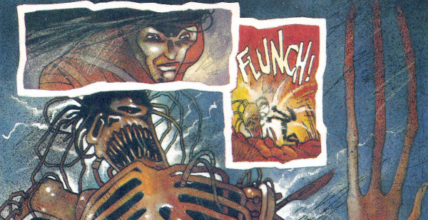

Serving the same function as the later Tales From the Black Museum, but failing to maintain the same longevity.
Art by Dean Ormston
| Story Title | Parts | Pages | w indicates a wraparound coverCovers | Year(s) | Issues | Writer | Artist | Colourist | Letterer |
|---|---|---|---|---|---|---|---|---|---|
| Feed Me | 1 | 5 | 0 | 1991 | M1.07 | Warren Ellis | Sean Phillips | <-- | Annie Parkhouse |
| Magic | 1 | 5 | 0 | 1991 | M1.08 | Ian Edginton | Sean Phillips | <-- | Annie Parkhouse |
Supertitled "Strange Cases".Eating Out | 1 | 8 | 0 | 1991 | JDMS4 | Dave Stone | Dean Ormston | <-- | Tom Frame |
| Demonspawn | 1 | 5 | 0 | 1991 | JDYB'92 | Dave Stone | Kev Hopgood | [greyscale] | Tom Frame |
Supertitled "Strange Cases".Skin Games | 1 | 8 | 0 | 1992 | M1.17 | John Smith | John Hicklenton | Angie Mills & Wendy Simpson various | Annie Parkhouse |
| Monsters | 1 | 8 | 0 | 1992 | M1.18 | Dave Stone | Nick Percival | <-- | Gordon Robson |
Supertitled "Strange Cases".The Great Outdoors | 1 | 6 | 0 | 1992 | M1.19 | Nicholas Barber | Nick Percival | <-- | Gordon Robson |
| Where the Heart Is | 1 | 6 | 0 | 1992 | JDMS5 | Nick Barber | Nick Percival | <-- | Gordon Robson |
No supertitle. Subtitled "A Strange Case". Young Love | 1 | 5 | 0 | 1993 | JDMS6 | Jim Alexander | Siku | <-- | Gordon Robson |
| year | episodes | pages |
| 1982 | 0 | 0 |
| 1983 | 0 | 0 |
| 1984 | 0 | 0 |
| 1985 | 0 | 0 |
| 1986 | 0 | 0 |
| 1987 | 0 | 0 |
| 1988 | 0 | 0 |
| 1989 | 0 | 0 |
| 1990 | 0 | 0 |
| 1991 | 4 | 23 |
| 1992 | 4 | 28 |
| 1993 | 1 | 5 |
| 1994 | 0 | 0 |
| 1995 | 0 | 0 |
| 1996 | 0 | 0 |
| 1997 | 0 | 0 |
| 1998 | 0 | 0 |
| 1999 | 0 | 0 |
| 2000 | 0 | 0 |
| 2001 | 0 | 0 |
| 2002 | 0 | 0 |